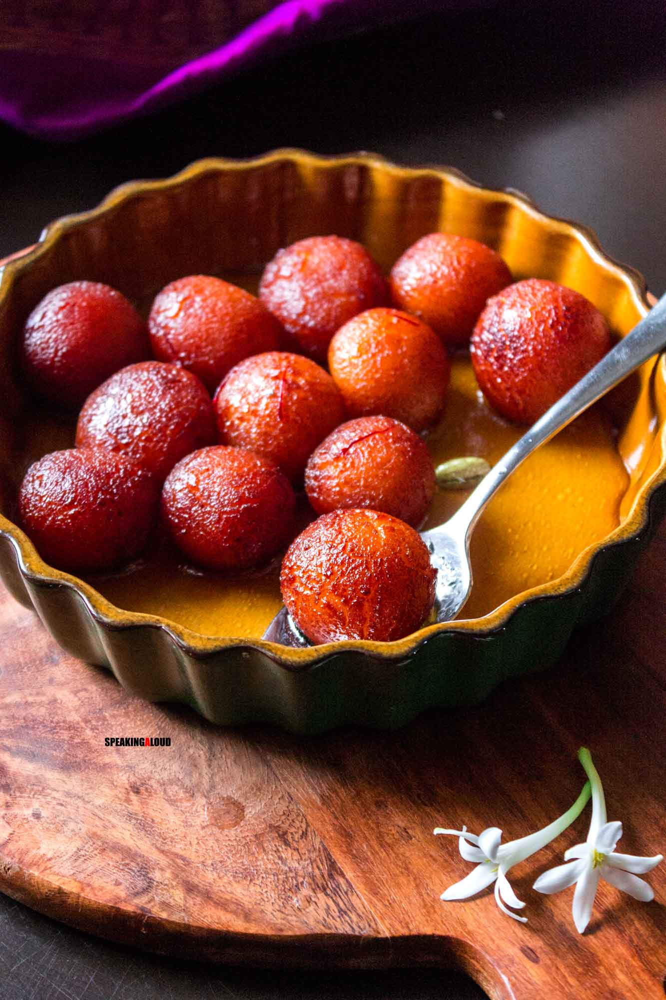

Home
Gulab Jamun

Description
GGulab Jamun is a popular Indian dessert made of deep-fried dough balls soaked in a fragrant sugar syrup flavored with cardamom, rose water, and saffron. These golden-brown delights are soft, spongy, and incredibly sweet, making them a favorite treat at festivals and celebrations.
Ingredients
- Khoya (Mawa)
- All-Purpose Flour (Maida)
- Baking Powder
- Milk
- Sugar
- Water
- Cardamom Powder
- Ghee or Oil (for frying)
Steps
- Make Dough:Mix khoya, all-purpose flour, and baking powder. Add milk gradually to form a soft dough.
- Form Balls:Shape the dough into small, smooth balls.
- Prepare Syrup:Boil water and sugar until it forms a sticky syrup. Add cardamom powder, rose water, and saffron.
- Fry Balls:Heat ghee or oil and deep-fry the dough balls until golden brown.
- Soak:Soak the fried balls in the warm sugar syrup until they absorb it and become soft.